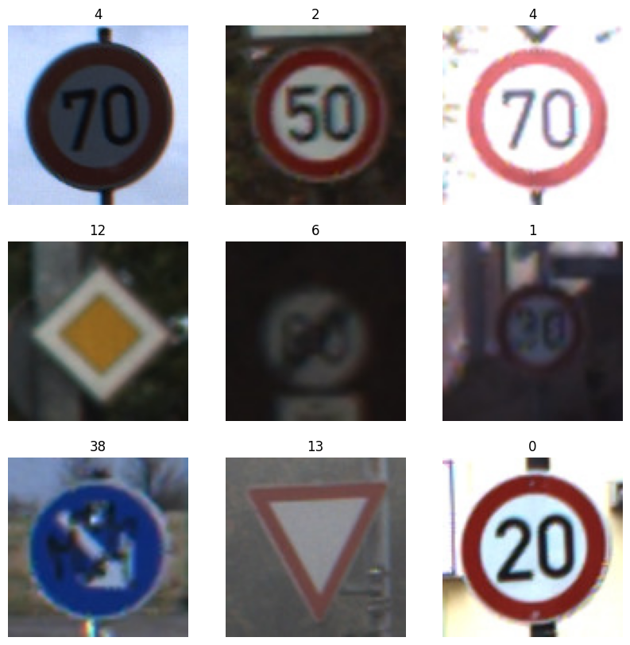

# Note: After you run this cell, the training and test data will be available in# the file browser. (Click the folder icon on the left to view it)## If you don't see the data after the cell completes, click the refresh button# in the file browser (folder icon with circular arrow)# First, let's download and unzip the data!echo "Downloading files..."!wget -q https://github.com/byui-cse/cse450-course/raw/master/data/roadsigns/training1.zip!wget -q https://github.com/byui-cse/cse450-course/raw/master/data/roadsigns/training2.zip!wget -q https://github.com/byui-cse/cse450-course/raw/master/data/roadsigns/holdout.zip!wget -q https://github.com/byui-cse/cse450-course/raw/master/data/roadsigns/mini_holdout.zip!wget -q https://github.com/byui-cse/cse450-course/raw/master/data/roadsigns/mini_holdout_answers.csv!echo "Unzipping files..."!unzip -q /content/training1.zip!unzip -q /content/training2.zip!unzip -q /content/holdout.zip!unzip -q /content/mini_holdout.zip# Combine the two traning directories!echo "Merging training data..."!mkdir /content/training!mv /content/training1/*/content/training!mv /content/training2/*/content/training# Cleanup!echo "Cleaning up..."!rmdir /content/training1!rmdir /content/training2!rm training1.zip!rm training2.zip!rm holdout.zip!rm mini_holdout.zip!echo "Data ready."
Downloading files...
Unzipping files...
Merging training data...
Cleaning up...
Data ready.
# ==========================================# 2. Imports & Preprocessing Generators# ==========================================import osimport numpy as npimport pandas as pdimport tensorflow as tffrom tensorflow import kerasfrom tensorflow.keras.preprocessing.image import ImageDataGeneratorfrom tensorflow.keras.models import Sequentialfrom tensorflow.keras.layers import Conv2D, MaxPooling2D, Flatten, Dense, Dropout, BatchNormalization# Set image constraintstraining_dir ='/content/training/'image_size = (48, 48) # Upgraded from 100x100 to 48x48 for optimal mobile speed & detailbatch_size =32# Training generator with safe spatial adjustments (No horizontal/vertical flips!)train_datagen = ImageDataGenerator( rescale=1./255, rotation_range=15, width_shift_range=0.1, height_shift_range=0.1, brightness_range=[0.7, 1.3], validation_split=0.2)validation_datagen = ImageDataGenerator( rescale=1./255, validation_split=0.2)train_generator = train_datagen.flow_from_directory( training_dir, target_size=image_size, subset="training", batch_size=batch_size, class_mode='sparse', seed=42, shuffle=True)validation_generator = validation_datagen.flow_from_directory( training_dir, target_size=image_size, batch_size=batch_size, class_mode='sparse', subset="validation", seed=42, shuffle=False)
Found 31368 images belonging to 43 classes.
Found 7841 images belonging to 43 classes.
from google.colab import drivedrive.mount('/content/drive')
Mounted at /content/drive
# We're using keras' ImageDataGenerator class to load our image data.# See (https://keras.io/api/preprocessing/image/#imagedatagenerator-class) for details## A couple of things to note:# 1. We're specifying a number for the seed, so we'll always get the same shuffle and split of our images.# 2. Class names are inferred automatically from the image subdirectory names.# 3. We're splitting the training data into 80% training, 20% validation.training_dir ='/content/training/'image_size = (100, 100)# Split up the training data images into training and validations sets# We'll use and ImageDataGenerator to do the splits# ImageDataGenerator can also be used to do preprocessing and agumentation on the files as can be seen with rescaletrain_datagen = ImageDataGenerator( rescale=1./255, validation_split=.2 )validation_datagen = ImageDataGenerator( rescale=1./255, validation_split=.2 )train_generator = train_datagen.flow_from_directory( training_dir, target_size = image_size, subset="training", batch_size=32, class_mode='sparse', seed=42,shuffle=True)validation_generator = validation_datagen.flow_from_directory( training_dir, target_size=image_size, batch_size=32, class_mode='sparse', subset="validation", seed=42)
Found 31368 images belonging to 43 classes.
Found 7841 images belonging to 43 classes.
# View 9 images and their class labelsimport matplotlib.pyplot as pltplt.figure(figsize=(10, 10))images, labels =next(train_generator) # Assuming train_generator is a generatorbatch_size = images.shape[0]for i inrange(min(9, batch_size)): ax = plt.subplot(3, 3, i +1) plt.imshow((images[i] *255).astype("uint8")) plt.title(int(labels[i])) plt.axis("off")plt.show()

# ==========================================# 3. Build Custom CNN Architecture (Fixed for 100x100)# ==========================================num_classes =len(train_generator.class_indices)model = Sequential([# First Convolutional Layer Group - Updated input_shape to 100x100 Conv2D(32, (3, 3), activation='relu', padding='same', input_shape=(100, 100, 3)), BatchNormalization(), Conv2D(32, (3, 3), activation='relu'), MaxPooling2D(pool_size=(2, 2)), Dropout(0.2),# Second Convolutional Layer Group Conv2D(64, (3, 3), activation='relu', padding='same'), BatchNormalization(), Conv2D(64, (3, 3), activation='relu'), MaxPooling2D(pool_size=(2, 2)), Dropout(0.3),# Classification Head Flatten(), Dense(256, activation='relu'), BatchNormalization(), Dropout(0.4), Dense(num_classes, activation='softmax')])model.compile( optimizer='adam', loss='sparse_categorical_crossentropy', metrics=['accuracy'])model.summary()
# ==========================================# 5. Sanity Check against Mini Holdout# ==========================================test_dir ='/content/'test_datagen = ImageDataGenerator(rescale=1./255)test_generator = test_datagen.flow_from_directory( test_dir, classes=['mini_holdout'], target_size=image_size, class_mode='sparse', shuffle=False)probabilities = model.predict(test_generator)predictions = [np.argmax(probas) for probas in probabilities]# Print out your first 10 predictions to verify formattingprint("First 10 predictions:", predictions[:10])
Found 201 images belonging to 1 classes.
7/7━━━━━━━━━━━━━━━━━━━━3s 216ms/step
First 10 predictions: [np.int64(16), np.int64(1), np.int64(38), np.int64(33), np.int64(11), np.int64(38), np.int64(18), np.int64(12), np.int64(25), np.int64(35)]
# ==========================================# 6. Format to Apple's MLKit Framework (Extension Fix)# ==========================================print("\nConverting model format for Apple MLKit...")import tensorflow as tfimport coremltools as ct# 1. Export the live model to a standard low-level SavedModel foldertf.saved_model.save(model, "saved_model_dir")# 2. Convert by passing the directory path directlymlmodel = ct.convert("saved_model_dir", source="tensorflow", inputs=[ct.ImageType(shape=(1, 100, 100, 3), scale=1.0/255.0)])# 3. FIXED: Changed extension from .mlmodel to .mlpackagemlmodel.save("TrafficSignClassifier.mlpackage")print("Successfully generated 'TrafficSignClassifier.mlpackage' in your sidebar files!")
Converting model format for Apple MLKit...
WARNING:coremltools:When both 'convert_to' and 'minimum_deployment_target' not specified, 'convert_to' is set to "mlprogram" and 'minimum_deployment_target' is set to ct.target.iOS15 (which is same as ct.target.macOS12). Note: the model will not run on systems older than iOS15/macOS12/watchOS8/tvOS15. In order to make your model run on older system, please set the 'minimum_deployment_target' to iOS14/iOS13. Details please see the link: https://apple.github.io/coremltools/docs-guides/source/target-conversion-formats.html
Running TensorFlow Graph Passes: 100%|██████████| 6/6 [00:00<00:00, 7.70 passes/s]
Converting TF Frontend ==> MIL Ops: 100%|██████████| 54/54 [00:00<00:00, 2264.77 ops/s]
Running MIL frontend_tensorflow2 pipeline: 100%|██████████| 7/7 [00:00<00:00, 790.57 passes/s]
Running MIL default pipeline: 100%|██████████| 95/95 [00:00<00:00, 133.91 passes/s]
Running MIL backend_mlprogram pipeline: 100%|██████████| 12/12 [00:00<00:00, 276.41 passes/s]
Successfully generated 'TrafficSignClassifier.mlpackage' in your sidebar files!
Once you have built and trained your model, the next step is to run the mini holdout images through it and see how well your model does at making predictions for images it has never seen before.
Since loading these images and formatting them for the model can be tricky, you may find the following code useful. This code only uses your model to predict the class label for a given image. You’ll still need to compare those predictions to the “ground truth” class labels in mini_holdout_answers.csv to evaluate how well the model does.
Previously, you were given a file that would check your results. This time you’re given the answers to the first mini holdout dataset. You’ll need to compare those predictions against the “ground truth” class labels in mini_holdout_answers.csv to evaluate how well the model does.
Make sure to use the insights gained from the mini hold out dataset in your executive summary.
from tensorflow.keras.preprocessing import image_dataset_from_directory
test_dir = '/content/'
test_datagen = ImageDataGenerator(rescale=1./255)
test_generator = test_datagen.flow_from_directory(
test_dir,
classes=['mini_holdout'],
target_size=image_size,
class_mode='sparse',
shuffle=False)
probabilities = model.predict(test_generator)
predictions = [np.argmax(probas) for probas in probabilities]
# ==========================================# 7. Evaluate Performance Against Ground Truth# ==========================================from sklearn.metrics import classification_report, accuracy_score# 1. Load the ground truth answers from the csvanswers_df = pd.read_csv('/content/mini_holdout_answers.csv')# Extract the true class labels column (assuming the column name is 'ClassId')# If your CSV uses a different column header name like 'Class', change 'ClassId' belowy_true = answers_df['ClassId'].valuesy_pred = predictions# 2. Calculate global accuracytotal_accuracy = accuracy_score(y_true, y_pred)print(f"Overall Mini Holdout Accuracy: {total_accuracy *100:.2f}%\n")# 3. Generate the class-by-class evaluation breakdown# This will show you exactly which signs your model nailed and where it struggledprint("Detailed Classification Report:")print(classification_report(y_true, y_pred, digits=4))
/usr/local/lib/python3.12/dist-packages/sklearn/metrics/_classification.py:1565: UndefinedMetricWarning: Recall is ill-defined and being set to 0.0 in labels with no true samples. Use `zero_division` parameter to control this behavior.
_warn_prf(average, modifier, f"{metric.capitalize()} is", len(result))
/usr/local/lib/python3.12/dist-packages/sklearn/metrics/_classification.py:1565: UndefinedMetricWarning: Recall is ill-defined and being set to 0.0 in labels with no true samples. Use `zero_division` parameter to control this behavior.
_warn_prf(average, modifier, f"{metric.capitalize()} is", len(result))
/usr/local/lib/python3.12/dist-packages/sklearn/metrics/_classification.py:1565: UndefinedMetricWarning: Recall is ill-defined and being set to 0.0 in labels with no true samples. Use `zero_division` parameter to control this behavior.
_warn_prf(average, modifier, f"{metric.capitalize()} is", len(result))
##Mini Hold out Dataset
Once you feel confident, you will need to predict for the full holdout dataset using the following code, and submit your csv file:
from tensorflow.keras.preprocessing import image_dataset_from_directory
test_dir = '/content/'
test_datagen = ImageDataGenerator(rescale=1./255)
test_generator = test_datagen.flow_from_directory(
test_dir,
classes=['holdout'],
target_size=image_size,
class_mode='sparse',
shuffle=False)
probabilities = model.predict(test_generator)
predictions = [np.argmax(probas) for probas in probabilities]
# ==========================================# 8. Generate Full Holdout Predictions# ==========================================import osimport pandas as pdimport numpy as npfrom tensorflow.keras.preprocessing.image import ImageDataGenerator# 1. Setup the generator for the full holdout foldertest_dir ='/content/'image_size = (100, 100) # Matching your trained model sizefull_holdout_datagen = ImageDataGenerator(rescale=1./255)full_holdout_generator = full_holdout_datagen.flow_from_directory( test_dir, classes=['holdout'], # Target the full holdout directory target_size=image_size, class_mode='sparse', shuffle=False# DO NOT SHUFFLE so predictions line up with filenames)# 2. Predict probabilities and extract class indicesprint("Predicting on full holdout dataset...")probabilities = model.predict(full_holdout_generator)predictions = [np.argmax(probas) for probas in probabilities]# 3. Extract the clean filenames (e.g., "00000.ppm")filenames = [os.path.basename(f) for f in full_holdout_generator.filenames]# 4. Create the final submission DataFrame matching course requirementssubmission_df = pd.DataFrame({'Filename': filenames,'ClassId': predictions})# Save to a CSV file in your Colab sidebarsubmission_df.to_csv('holdout_predictions.csv', index=False)print("Successfully generated 'holdout_predictions.csv'!")
Found 12630 images belonging to 1 classes.
Predicting on full holdout dataset...
395/395━━━━━━━━━━━━━━━━━━━━18s 46ms/step
Successfully generated 'holdout_predictions.csv'!